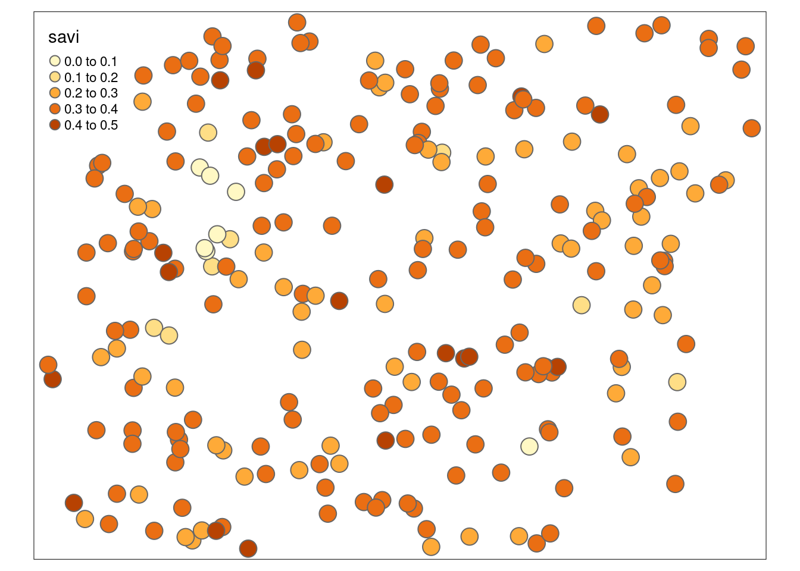
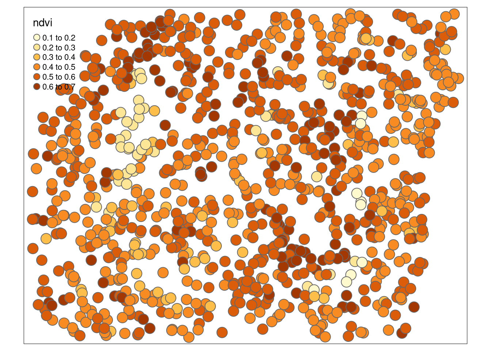
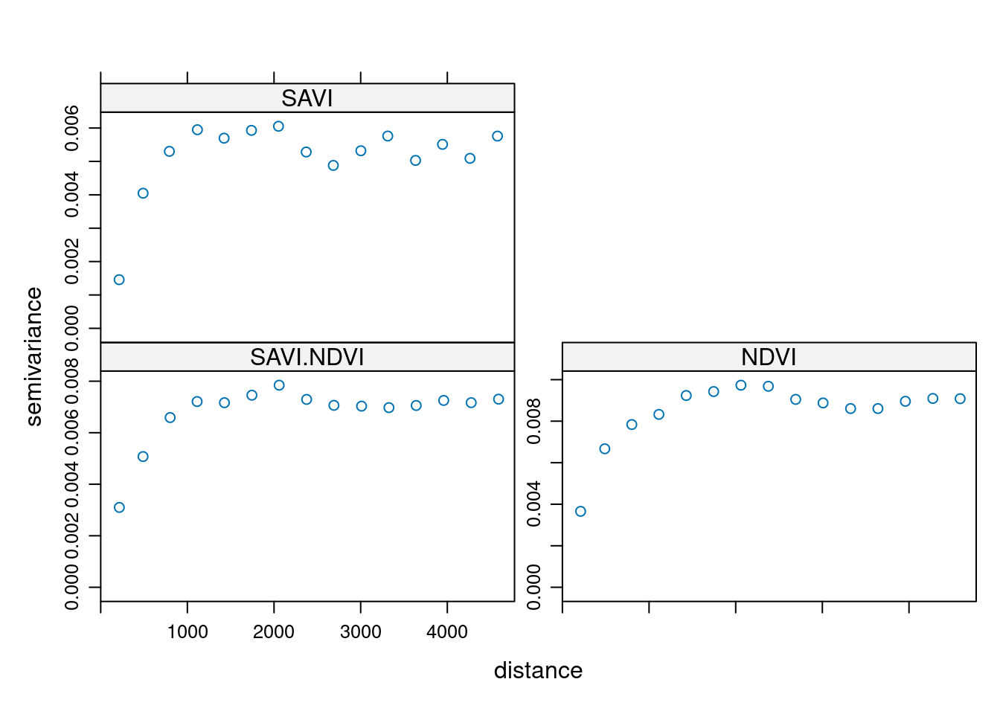
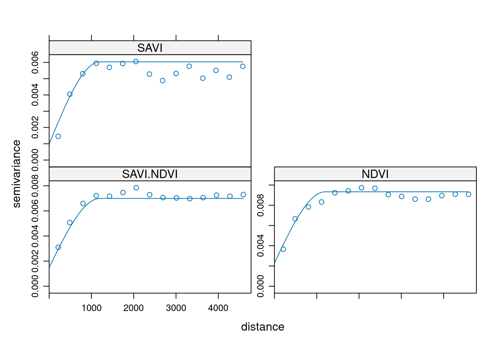
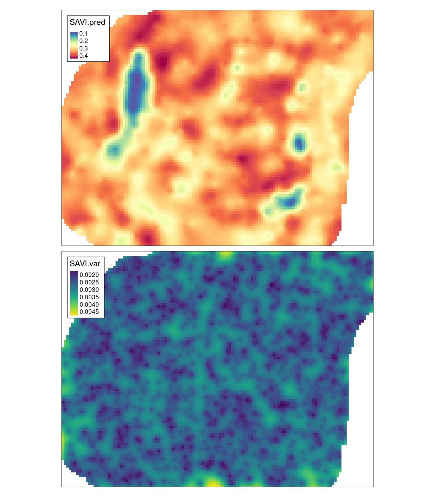

10 Estymacje wielozmienne
Odtworzenie obliczeń z tego rozdziału wymaga załączenia poniższych pakietów oraz wczytania poniższych danych:
library(sf)
library(stars)
library(gstat)
library(tmap)
library(geostatbook)
data(punkty)
data(punkty_ndvi)
data(siatka)10.1 Kokriging
10.1.1 Kokriging (ang. co-kriging)
Kokriging pozwala na wykorzystanie dodatkowej zmiennej (ang. auxiliary variable), zwanej inaczej kozmienną (ang. co-variable), która może być użyta do prognozowania wartości badanej zmiennej w nieopróbowanej lokalizacji. Zmienna dodatkowa może być pomierzona w tych samych miejscach, gdzie badana zmienna, jak też w innych niż badana zmienna. Możliwa jest też sytuacja, gdy zmienna dodatkowa jest pomierzona w dwóch powyższych przypadkach. Kokriging wymaga, aby obie zmienne były istotnie ze sobą skorelowane. Najczęściej kokriging jest stosowany w sytuacji, gdy zmienna dodatkowa jest łatwiejsza (tańsza) do pomierzenia niż zmienna główna. W efekcie, uzyskany zbiór danych zawiera informacje o badanej zmiennej oraz gęściej opróbowane informacje o zmiennej dodatkowej. Jeżeli informacje o zmiennej dodatkowej są znane dla całego obszaru wówczas bardziej odpowiednią techniką będzie kriging z zewnętrznym trendem (KED).
10.2 Krossemiwariogramy
10.2.1 Krossemiwariogramy (ang. crossvariogram)
Metoda kokrigingu opiera się nie o semiwariogram, lecz o krossemiwariogramy. Krossemiwariogram jest to wariancja różnicy pomiędzy dwiema zmiennymi w dwóch lokalizacjach. Wyliczając krossemiwariogram otrzymujemy empiryczne semiwariogramy dla dwóch badanych zmiennych oraz krosswariogram dla kombinacji dwóch zmiennych.
W poniższym przykładzie istnieją dwie zmienne, savi ze zbioru punkty pomierzona w 242 lokalizacjach oraz ndvi ze zbioru punkty_ndvi pomierzona w 992 punktach (ryciny 10.1 i 10.1).
tm_shape(punkty) +
tm_symbols(col = "savi")
Rycina 10.1: Mapa wartości zmiennej savi.
tm_shape(punkty_ndvi) +
tm_symbols(col = "ndvi")
Rycina 10.2: Mapa wartości zmiennej ndvi.
Tworzenie krossemiwariogramów odbywa się z użyciem funkcji gstat(). Na początku definiujemy pierwszy obiekt g.
Składa się on z obiektu pustego (NULL), nazwy pierwszej zmiennej (nazwa może być dowolna), wzoru (w przykładzie savi ~ 1), oraz pierwszego zbioru punktowego.
Następnie do pierwszego obiektu g dodajemy nowe informacje również poprzez funkcję gstat(). Jest to nazwa obiektu (g), nazwa drugiej zmiennej, wzór, oraz drugi zbiór punktowy.
g = gstat(NULL,
id = "SAVI",
form = savi ~ 1,
data = punkty)
g = gstat(g,
id = "NDVI",
form = ndvi ~ 1,
data = punkty_ndvi)
g## data:
## SAVI : formula = savi`~`1 ; data dim = 242 x 5
## NDVI : formula = ndvi`~`1 ; data dim = 992 x 1Z uzyskanego w ten sposób obiektu tworzymy krossemiwariogram (funkcja variogram()), a następnie go wizualizujemy używając funkcji plot() (rycina 10.3).

Rycina 10.3: Krossemiwariogram zmiennych savi i ndvi.
10.3 Modelowanie krossemiwariogramów
Modelowanie krossemiwariogramów, podobnie jak ich tworzenie, odbywa się używając funkcji gstat(),
gdzie podaje się wcześniejszy obiekt g, model, oraz argument fill.all = TRUE.
Ten ostatni parametr powoduje, że model dodawany jest do wszystkich elementów krossemiwariogramu.
g_model = vgm(0.006, model = "Sph",
range = 1200, nugget = 0.001)
g1 = gstat(g, model = g_model, fill.all = TRUE)
g1## data:
## SAVI : formula = savi`~`1 ; data dim = 242 x 5
## NDVI : formula = ndvi`~`1 ; data dim = 992 x 1
## variograms:
## model psill range
## SAVI[1] Nug 0.001 0
## SAVI[2] Sph 0.006 1200
## NDVI[1] Nug 0.001 0
## NDVI[2] Sph 0.006 1200
## SAVI.NDVI[1] Nug 0.001 0
## SAVI.NDVI[2] Sph 0.006 1200W przypadku semiwariogramów funkcja fit.variogram() służyła dopasowaniu parametrów modelu do semiwariogramu empirycznego.
Podobną rolę w krossemiwariogramach spełnia funkcja fit.lmc() - dopasowuje ona liniowy model koregionalizacji do semiwariogramów wielozmienych (rycina 10.4).
Funkcja fit.lmc() oczekuje co najmniej dwóch elementów, krossemiwariogramu oraz modelów krossemiwariancji.
W poniższym przykładzie dodatkowo użyto parametru correct.diagonal = 1.01, z uwagi na to że analizowane zmienne wykazywały bardzo silną korelację oraz parametru fit.method.
Ten ostatni parametr określa, która z użytych metod automatycznego dopasowania semiwariogramów jest używana.
Pakiet gstat ma domyślnie ustawione fit.method = 7, co daje największe znaczenie parom punktów o najmniejszym zasięgu.
Ta opcja nie jest zazwyczaj optymalna w przypadku krossemiwariogramów - tutaj częściej stosuje się fit.method = 6 (wagi nie są nadawane) lub fit.method = 1 (wagi proporcjonalne do liczby par punktów w każdym przedziale).
g2 = fit.lmc(v, g1,
correct.diagonal = 1.01,
fit.method = 6)
g2## data:
## SAVI : formula = savi`~`1 ; data dim = 242 x 5
## NDVI : formula = ndvi`~`1 ; data dim = 992 x 1
## variograms:
## model psill range
## SAVI[1] Nug 0.0009873135 0
## SAVI[2] Sph 0.0050465345 1200
## NDVI[1] Nug 0.0023006100 0
## NDVI[2] Sph 0.0070299532 1200
## SAVI.NDVI[1] Nug 0.0014922022 0
## SAVI.NDVI[2] Sph 0.0055018027 1200
plot(v, g2)
Rycina 10.4: Automatycznie dopasowane modele krossemiwariogramu zmiennych savi i ndvi.
10.4 Kokriging
Posiadając dopasowane modele oraz siatkę można uzyskać wynik używając funkcji predict() (rycina 10.5).
ck = predict(g2, newdata = siatka)## Linear Model of Coregionalization found. Good.
## [using ordinary cokriging]W efekcie otrzymujemy pięć zmiennych:
-
SAVI.pred- estymacja zmiennejsavi -
SAVI.var- wariancja zmiennejsavi -
NDVI.pred- estymacja zmiennejndvi -
NDVI.var- wariancja zmiennejndvi -
cov.SAVI.NDVI- kowariancja zmiennychsaviorazndvi
ck## stars object with 2 dimensions and 5 attributes
## attribute(s):
## Min. 1st Qu. Median Mean 3rd Qu.
## SAVI.pred 0.077243684 0.290908153 0.321211504 0.315700226 0.348022981
## SAVI.var 0.001525063 0.002379011 0.002638353 0.002652832 0.002905902
## NDVI.pred 0.205549518 0.468630003 0.508090071 0.501150702 0.542080400
## NDVI.var 0.003082640 0.003893078 0.004212984 0.004272496 0.004578181
## cov.SAVI.NDVI 0.001930305 0.002625231 0.002885524 0.002929714 0.003180885
## Max. NA's
## SAVI.pred 0.437090600 1270
## SAVI.var 0.004777928 1270
## NDVI.pred 0.658528553 1270
## NDVI.var 0.007378830 1270
## cov.SAVI.NDVI 0.005432433 1270
## dimension(s):
## from to offset delta refsys x/y
## x 1 127 745542 90 ETRS89 / Poland CS92 [x]
## y 1 96 721256 -90 ETRS89 / Poland CS92 [y]
tm_shape(ck) +
tm_raster(col = c("SAVI.pred", "SAVI.var"),
style = "cont",
palette = list("-Spectral", "viridis")) +
tm_layout(legend.frame = TRUE)
Rycina 10.5: Estymacja i wariancja estymacji zmiennej savi używając metody kokrigingu (CK).
10.5 Zadania
Zadania w tym rozdziale są oparte o dane z meuse.all z pakietu gstat.
Na jego podstawie wydziel dwa obiekty - meuse164 zawierający tylko zmienną cadmium (kadm) dla 164 punktów, oraz meuse60 zawierający tylko zmienną copper (miedź) dla 60 punktów.
- Stwórz siatkę interpolacyjną o rozdzielczości 100 jednostek dla obszaru, w którym znajdują się punkty
meuse. - Zbuduj optymalne modele semiwariogramu zmiennej
cadmiumdla obiektumeuse164oraz zmiennejcopperdla obiektumeuse60. Porównaj graficznie uzyskane modele. - Korzystając z obiektów
meuse164orazmeuse60stwórz krossemiwariogram. - Zbuduj ręczny model uzyskanego krossemiwariogramu. Następnie stwórz model automatyczny. Porównaj uzyskane wyniki.
- Stwórz estymację zmiennej
copperw nowo utworzonej siatce korzystając z kokrigingu. - Dodatkowe: stwórz estymację zmiennej
saviz obiektupunktyużywając krigingu zwykłego. Porównaj uzyskaną estymację z estymacją przedstawioną w tym rozdziale, stworzoną używając kokrigingu.